Making AWS
Easier to
Operate
Connecting cloud services around the work customers needed to do: across Systems Manager, Config, CloudTrail, CloudFormation, OpsWorks, and resource management.
The inflection point
Background & Context
In 2016, AWS was at an inflection point. After a decade of rapid, engineering-driven growth, AWS had become the market leader in cloud infrastructure — but also its own biggest competitor. Products were built as independent "building blocks" by separate teams, each optimized for speed and technical depth. The result was a fragmented, inconsistent experience that left enterprise customers stitching together their own workflows.
Leadership recognized that growth and retention hinged on ease of use, especially for enterprise DevOps and IT administrators. I was brought in as one of the earliest design leaders to lead the UX strategy for AWS Management Tools — a suite responsible for fleet management, change management, automation, compliance, provisioning, and operations.
When I first stepped into the role, the challenge wasn't just about fixing usability — it was about untangling years of fragmented growth and aligning 30+ teams around a single vision. Funding cycles were already closed, goals were locked. I used that as an opportunity to go deep on discovery, write the strategy documents, and define what we called "Consumer Grade Enterprise UX": an easier, more human experience for DevOps and IT admins.
Can we reimagine enterprise software so that usability isn't an afterthought, but a strategic advantage that drives adoption and retention?
Chapter 01: Customers were connecting what we had built separately
Customers were connecting what we had built separately
The spaces between services
AWS had grown through powerful, independently developed services. Each team optimized its own product, with its own roadmap, technical model, and priorities.
Customers experienced the spaces between them. Setting up infrastructure, checking its configuration, investigating an incident, and resolving it could mean moving between multiple consoles, searching documentation, and piecing together the same context repeatedly.
The challenge was to make the portfolio work as a connected experience while preserving the flexibility that made the individual services valuable.
"It's somewhat shocking that every service team seems to be doing their own thing in terms of management of the console."
Customer feedback
This is Frustrating, I have more than 20 tabs open! AWS keeps shipping their organisational structure and we suffer”
IT operator in a financial institution
Most of the time I am not sure what I am doing. I am lost in the documentation. Why can't it be easier?”
IT admin in mid-size startup
AWS is this complex behemoth that you need to spend a long time "learning"”
Developer feedback, Twitter
Frankly, @awscloud needs to hire UX people. The AWS console is a dreadful mess, the documentation is horrendous.”
@tobie, Twitter
Fragmented teams
Align 30+ teams across nine org units, each with its own roadmap and leadership vision.
Legacy Products
Legacy products in market meant a simple lift and shift would not work.
Inconsistent data
A large volume of data that was inconsistent and not telling a coherent story.
No design system
Teams built the same components multiple times. The design system was still being built.
Broken collaboration
Trust between design and the broader organisation was broken. Designers were severely understaffed.
How do we create a coherent, modular and integrated experience that simplifies and automates tasks related to operations management?
Defining success metrics
What we set out to measure
- Increase first-feature adoption success rate by +20%
- Reduce average time-to-onboard by 30%
- Achieve >80% task success rate in key hub flows
- Improve NPS or SUS by +10 points
- Drive +15% growth in cross-feature adoption
- Reduce support tickets related to Build UI by 25%
- Improve retention rate or ARR uplift among accounts with high Systems Manager usage
- 90% of new features built using the shared design system
- Reduce design cycle time by 20%
- Maintain >80% designer engagement and satisfaction
Chapter 02: One portfolio, connected responsibilities
One portfolio, connected responsibilities
Seven services, one customer journey
Each service in the portfolio had its own team, roadmap, and model. Together, they covered the full arc of cloud operations, but customers experienced the gaps between them. The work was to connect them around what someone actually needed to do.

Chapter 03: Establishing a direction teams could share
Establishing a direction teams could share
Building the organization alongside the experience
I joined an environment where annual plans were committed, funding cycles had closed, and design capacity was stretched. A shared design system was still developing, teams were rebuilding trust, and existing customers depended on the products already in market.
My responsibility was to establish the UX direction and build the organization needed to deliver it. I hired across design, research, design technology, and writing, led a focused discovery team, and worked with product and engineering leaders to align priorities.
I used written vision and strategy documents to make the customer problem concrete and define a future experience. Integrated prototypes gave executives and product teams something tangible to evaluate. Together, they helped move the conversation toward the customer journey and what each team needed to contribute.
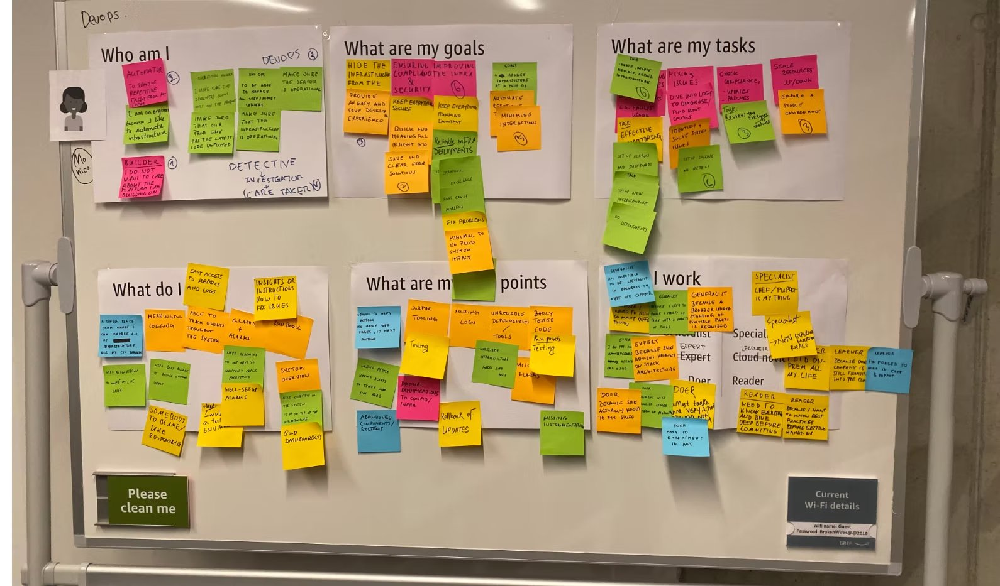
The customer journey became the shared brief across teams with different roadmaps.
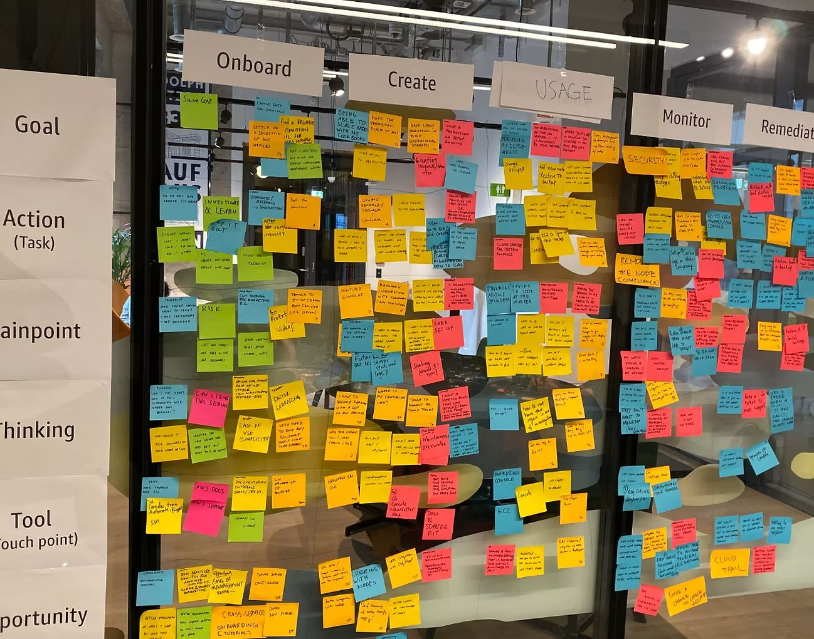
We began by reviewing existing research, identifying gaps, and establishing a baseline for the experience. Interviews, journey mapping, usage analysis, MaxDiff task prioritization, and usability evaluations helped us identify recurring friction and focus our effort.
One disconnect stood out: design teams were focused on the practitioners operating AWS every day. Leadership conversations often centered on the executives choosing and buying it. We mapped roles, responsibilities, and influence inside customer organizations to bring those perspectives together.
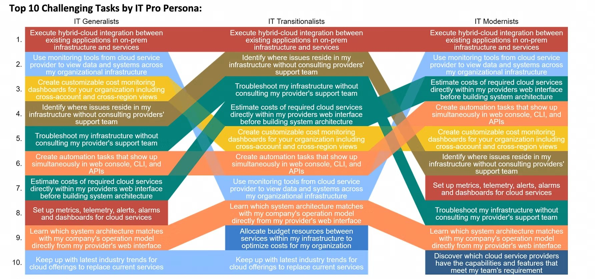
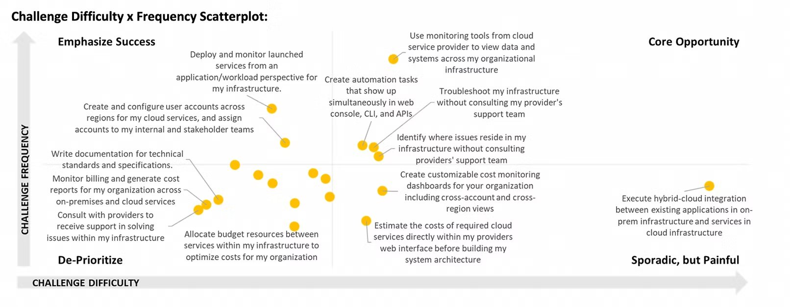
The same person could be a developer in the morning and an operator when something broke.
We found that people moved between responsibilities. The same person might write code as a developer, configure infrastructure as an architect, and investigate an incident as an on-call operator. We called these responsibilities "hats." That gave us a more useful way to organize the experience: around what someone needed to accomplish in a particular moment.
A developer spinning up a new environment needs to define resources, configure dependencies, and get infrastructure running quickly. CloudFormation templates and Quick Setup were the primary touchpoints.
An architect setting up an account needed to establish standards, configure compliance rules, and ensure the right guardrails were in place before others started building.
When something broke, an operator needed to understand what happened, which resources were affected, and what action to take — without having to assemble that context from multiple consoles.
During a security review, the same person needed to trace who did what, when, and where — connecting activity records to the configuration state at that point in time.

Chapter 05: Systems Manager: a connected operational journey
Systems Manager: a connected operational journey
Set up · Find context · Investigate · Act
We shaped the experience around four activities: set up, find context, investigate, and act. This gave the portfolio a shared direction while allowing teams to contribute through their existing services.
Start with the outcome
We introduced a library of recommended setups for common use cases. Customers could choose what they wanted to accomplish, understand what a configuration would do, and select where to apply it.
Recommended defaults simplified the common path. Advanced configuration preserved control for customers with more specialized requirements. Underneath, CloudFormation templates helped make the setups repeatable and extensible.
This work included bringing Config into the setup journey — customers could establish configuration recording by choosing coverage, delivery settings, notifications, and target accounts and Regions.
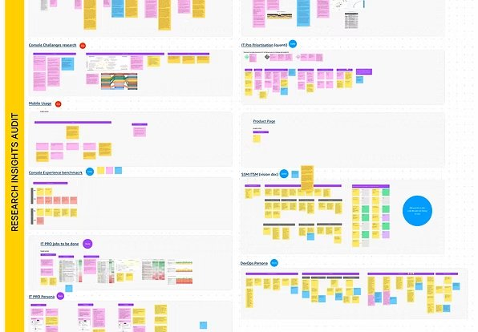

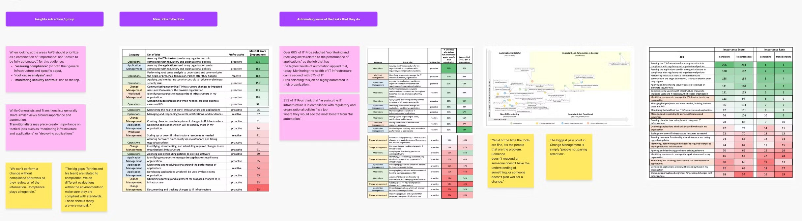
Bring the right resources into view
We developed focused hubs around use cases and responsibilities, bringing related resources and information into a shared context. Resource grouping helped customers work with the infrastructure behind an application or environment.
This approach supported the "hats" insight: the most useful view depended on the responsibility someone was taking on at that moment.
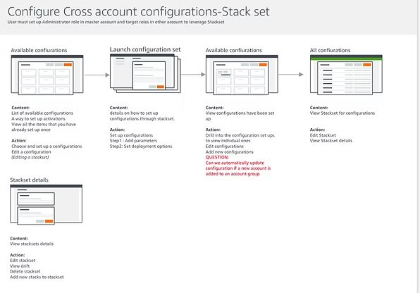
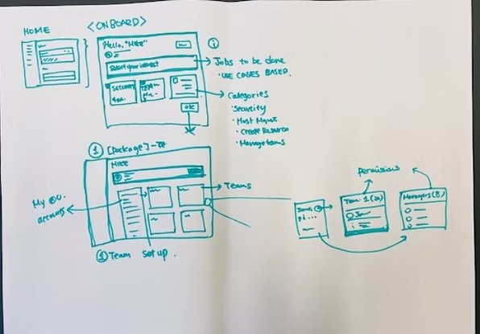
Investigate the issue in one place
An operational problem should not require the customer to assemble an investigation environment first. OpsCenter organized investigation around OpsItems: operational issues with relevant resources and supporting information attached.
Config history, CloudTrail activity, metrics, and alerts helped customers understand what had happened without repeatedly reconstructing the context across consoles. Searchable details, priorities, statuses, related issues, and summary views supported both individual investigations and the broader operational workload.
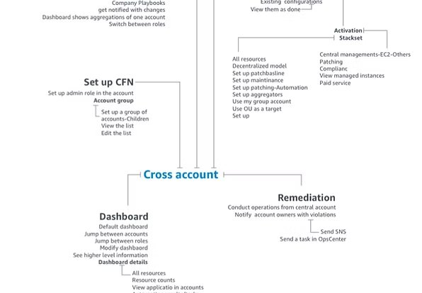
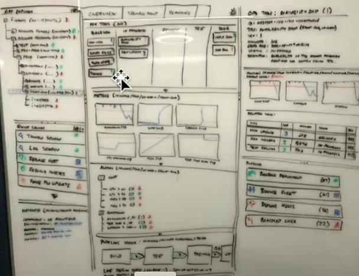
Connect the evidence to an action
Systems Manager Automation provided reusable runbooks for common operational tasks, and OpsCenter connected those runbooks to the affected resources. Customers could investigate an OpsItem and initiate an appropriate automation from the same context.
The design needed to make the target, action, and execution state understandable — particularly when an operation could affect multiple resources. This connected issue identification, investigation, and remediation into a more coherent flow.

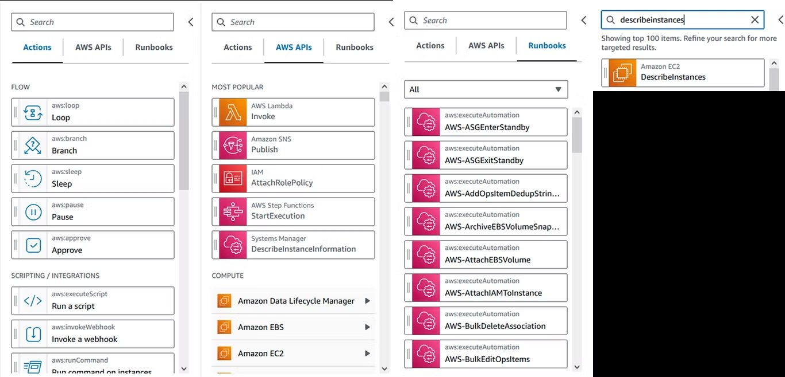
Chapter 06: Onboarding to the new experience
Onboarding to the new experience
From complexity to a guided first step
We introduced a library of recommended setups and configurations tailored to common use cases. Customers could pick a configuration and apply it across accounts, regions, or even their entire organization — all without wrestling with unnecessary complexity.
Instead of overwhelming users with endless fields, we focused on the essentials: what the setup does and where it should be applied — whether to a single instance, an entire account, or the full organizational structure.
Under the hood, the experience was powered by CloudFormation substacks, making it easy for power users to customize and extend. We designed the product itself as a platform, allowing teams to plug in their own configurations and workflows.
The library was created and owned by my team as a platform, not just a catalog of templates. It offered customers ready-to-use setups that worked across accounts, regions, or entire organizations, while allowing other AWS teams to build and publish their own quick-start configurations.
This approach delivered immediate value to customers and scaled internally, enabling faster innovation, greater consistency, and a growing ecosystem of reusable solutions.
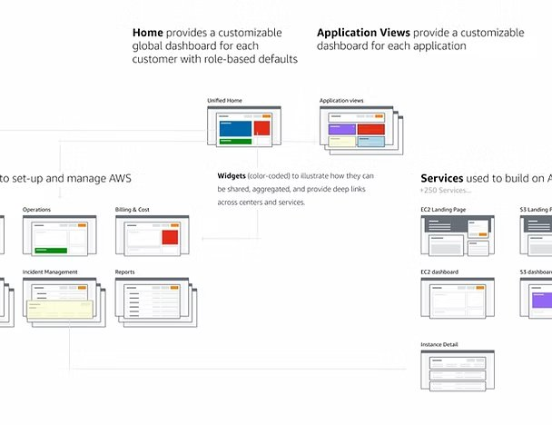

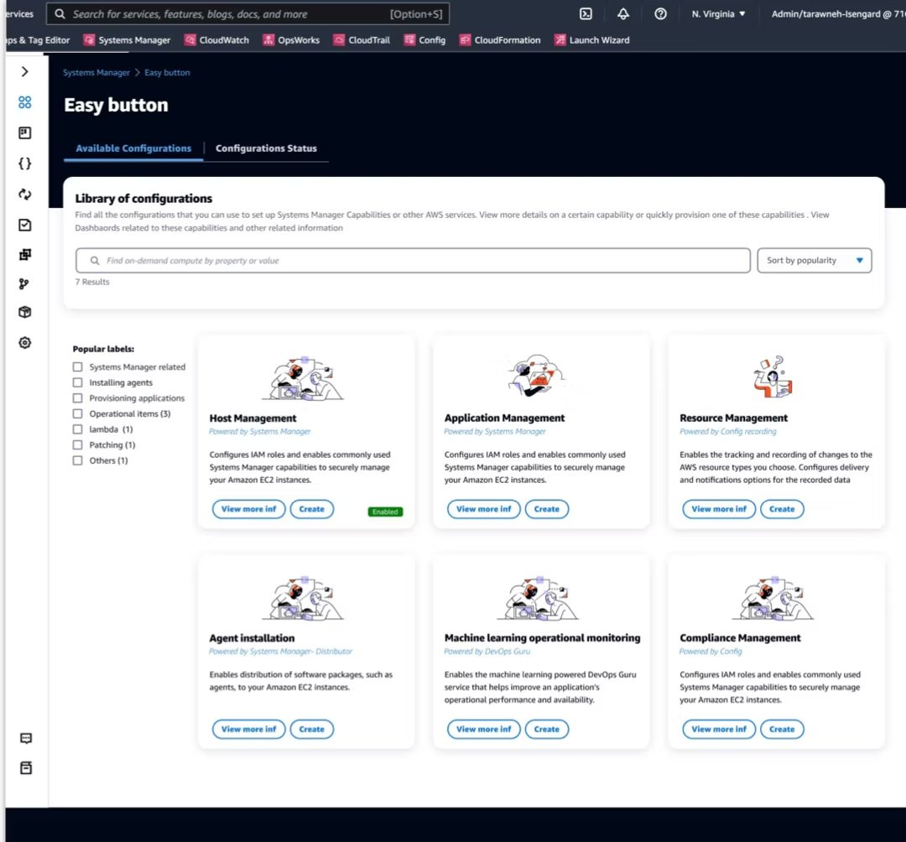
When a user selects a configuration package, they're shown a clear preview of which steps will be created and how they'll run — then choose where to apply them.
When a user selects a configuration package, they're shown a clear preview of which steps will be created and how they'll run. They can then choose where to apply these actions — to a single instance, an account, or the entire organization.
Each action comes with pre-filled fields based on AWS best practices, so customers can launch quickly with recommended defaults or switch to an advanced mode for full customization.
Selecting and configuring a package results in the creation of a curated bundle of AWS services — all tailored to the specific use case the customer has chosen. Rather than reinventing the wheel, the UI layer was designed on top of existing AWS services, abstracting away their complexity and presenting them as a single, unified workflow.


Monitoring and dashboarding became the heart of the experience. We recognized that users rarely monitor just for the sake of it — they monitor because something happens: an incident, an anomaly, a compliance flag.
To support this, we introduced a unifying concept called an "Ops Item." Each Ops Item represents a specific incident or event, capturing when it happened, what was affected, and why. The system automatically pulls in all the relevant context — monitoring metrics, logs, compliance details, and related alerts — into a single, consolidated view.
This turned what was previously a scattered, service-by-service experience into a centralized incident hub, enabling users to quickly understand the situation and take action without switching between tools or dashboards.
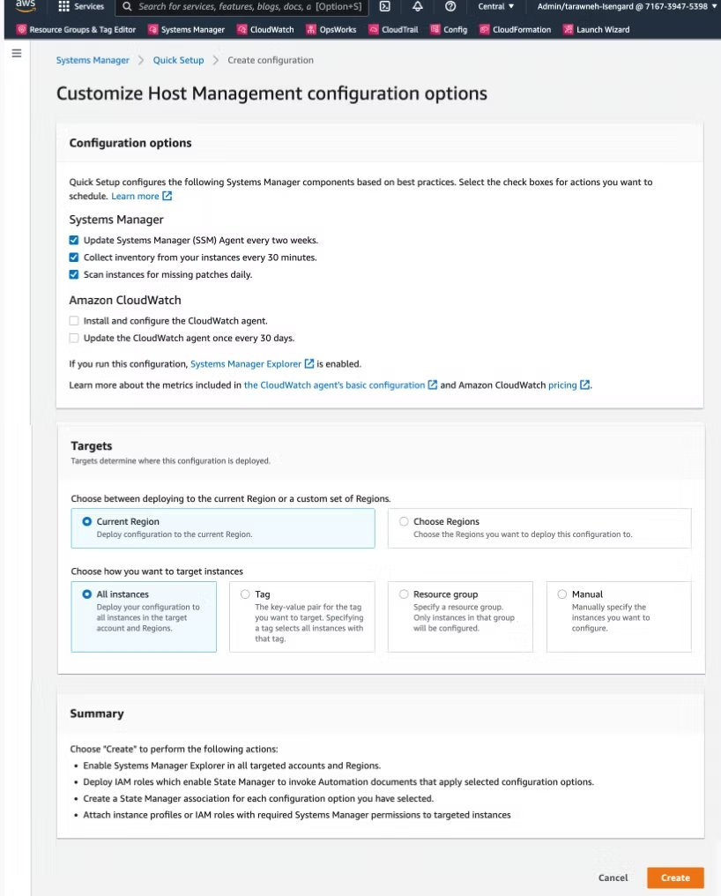

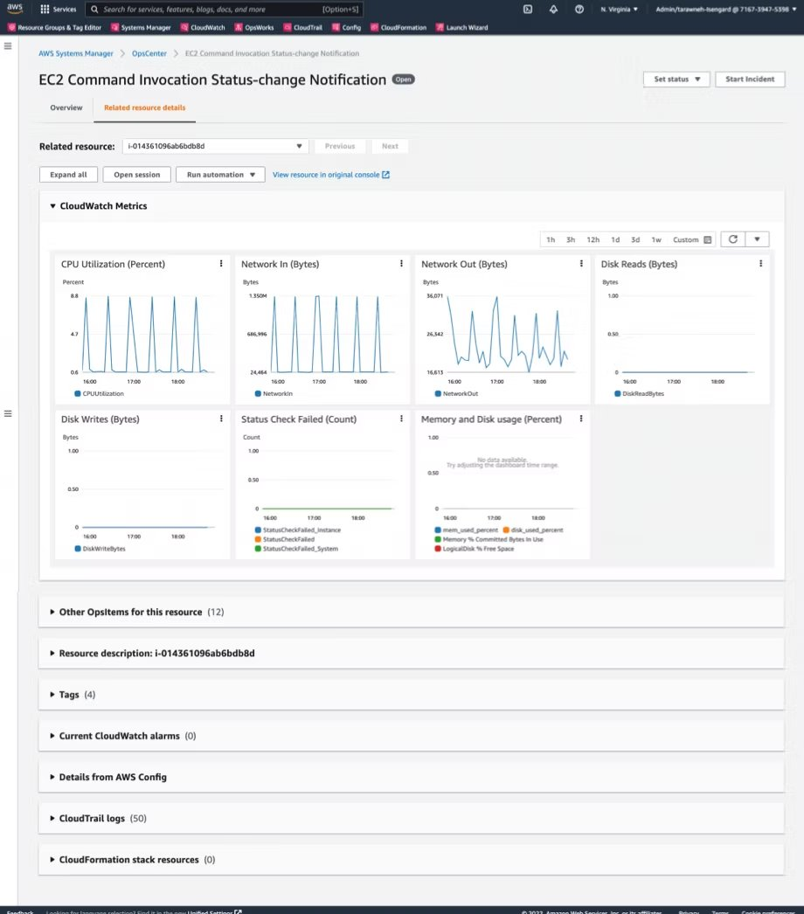
Chapter 07: Designing across the full feature portfolio
Designing across the full feature portfolio
Systems Manager · CloudFormation · CloudTrail · OpsWorks · AWS Config · Resource Groups · Tag Editor
My remit included the feature portfolios of Systems Manager, CloudFormation, and CloudTrail. Each served a different part of the customer journey, with shared needs for clear scope, understandable status, and control over consequential actions.
Systems Manager brought routine administration and urgent troubleshooting into the same portfolio. The experience needed to work for an operator inspecting one machine and an administrator making changes across a fleet.
Set up and understand
Maintain and access
Automate and control change
Manage application context
Investigate and respond
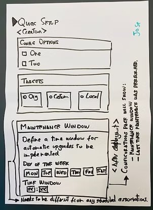
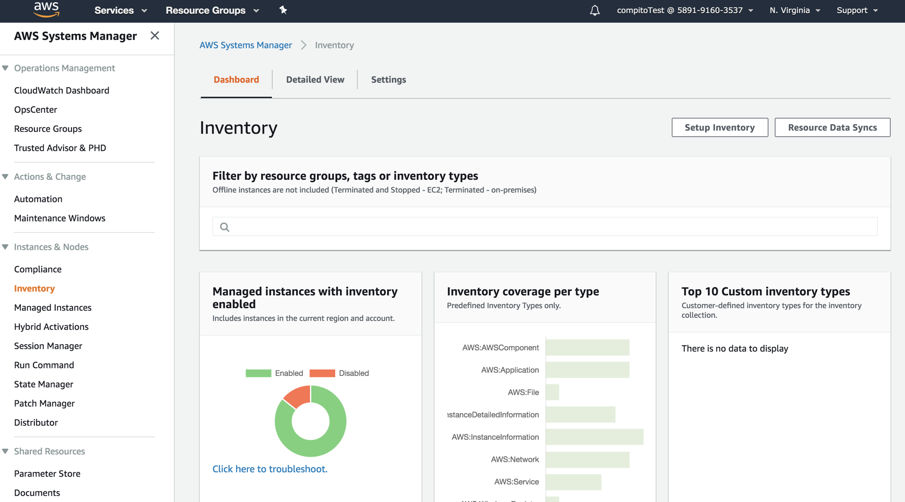
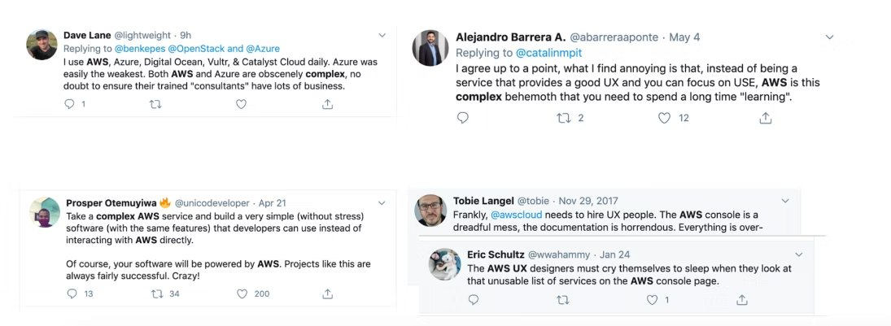
CloudFormation let customers describe infrastructure, create it repeatedly, and manage its evolution. The experience needed to communicate what would change, which resources depended on one another, and what happened when a deployment failed.
Define and reuse
Deploy at scale
Review and recover
Extend the platform
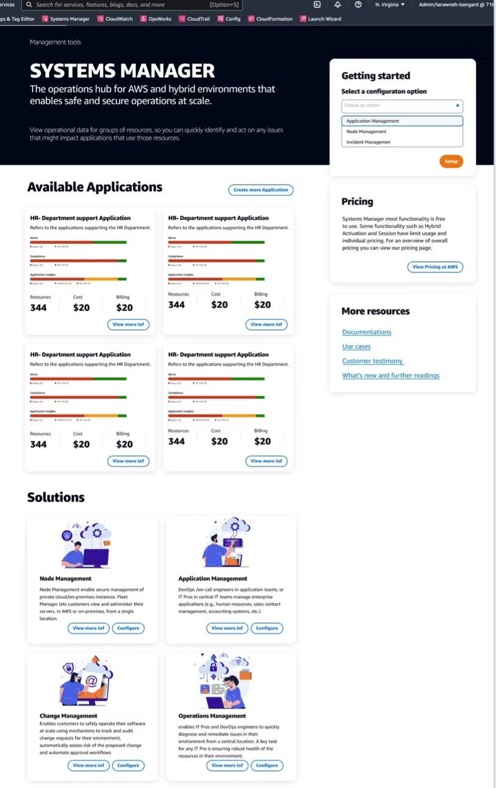
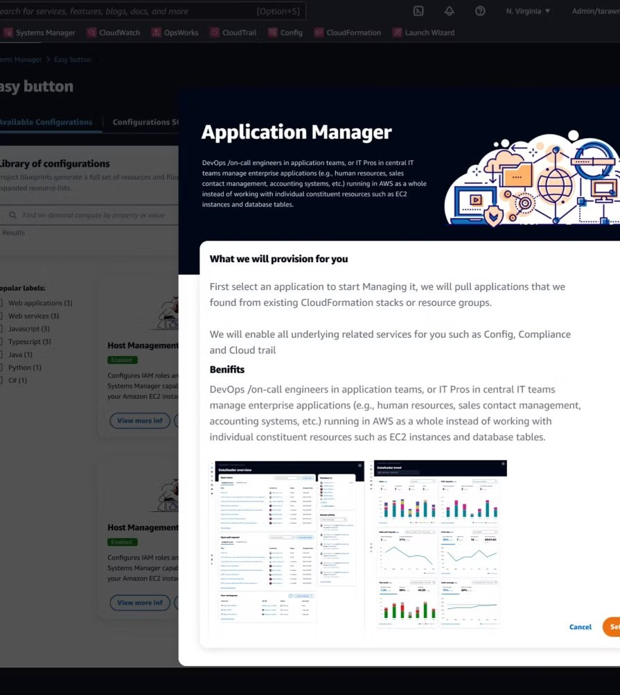
CloudTrail helped customers answer a practical question: who did what, where, and when? The experience connected recording choices with the ability to find and understand relevant activity later.
Find activity
Define coverage
Store and protect
Investigate


OpsWorks provided managed Chef and Puppet for customers who needed configuration management at scale. The experience needed to connect the operational model of configuration automation with the visibility customers expected from a console.
Configure and automate
Manage instances and apps
AWS Config recorded the configuration of resources and tracked how they changed over time. The experience needed to connect recording choices with the ability to understand the state of an environment at a specific point, and to evaluate that state against compliance rules.
Record and track
Evaluate and remediate

My work on Resource Groups and Tag Editor covered their second-generation experiences, the retirement of v1, and the transition of existing customers to v2. Building v2 and moving existing customers were connected responsibilities.
The transition from v1 was part of delivering v2.
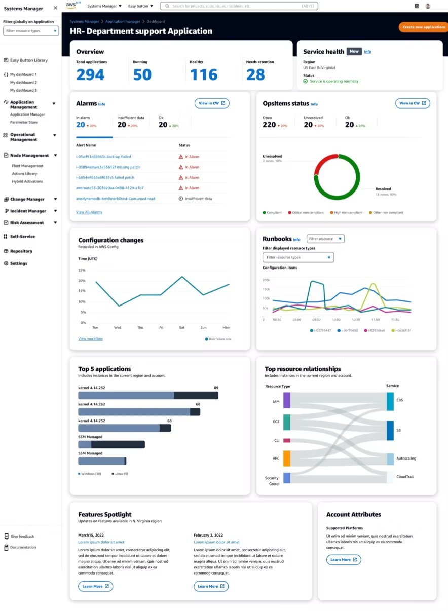
Chapter 08: Building the team behind the experience
Building the team behind the experience
Organizational work as product work

Leadership Responsibilities
- Set the vision and UX strategy for simplifying AWS operations into task-based, modular experiences.
- Defined KPIs linking design outcomes to business metrics such as ARR growth, onboarding efficiency, and reduced support tickets.
- Built and scaled the design organization — hiring designers, researchers, design technologists, and writers.
- Led a tiger team to drive the discovery phase, define personas, map jobs-to-be-done, and deliver the first integrated prototypes.
- Pitched the strategy to executives and GMs, securing buy-in and resources.
The product direction required sustained collaboration across more than 30 teams in nine organizational units. I worked across hiring, resourcing, career development, design processes, and product milestones.
Research gave teams a shared understanding of customer needs. Written strategy supported decisions about direction and investment. Prototypes made cross-service workflows concrete enough to discuss and develop together.
The organizational work and product work reinforced each other: connecting the experience required teams to understand how their decisions affected the wider journey.
Chapter 09: Impact
Impact
AWS Management Tools
Chapter 10: What the work delivered
What the work delivered
Three connected outcomes
A connected operational experience
Systems Manager brought setup, resource context, investigation, and automation closer together, with Config and CloudTrail contributing information to the operational journey.
A foundation other teams could extend
The setup library and reusable configurations gave teams a shared way to contribute capabilities while building on existing AWS services.
A new generation of resource management
Resource Groups v2 and Tag Editor v2 extended the work into new product experiences, including the retirement of v1 and customer transitions.
Going through the capabilities and experience of Systems Manager is beyond the purpose of this post, but the people who built it and keep building it are some of the unsung heroes of the company. If you have not followed the evolution of this service, you should pay attentionperilli.com — Amazon Has Won Enterprise IT Management
The work between products deserves as much attention as the work within them.
The work between products is where customers encounter missing context, repeated steps, and conflicting mental models. At AWS, I learned to lead through those boundaries: understand the customer's work, make a shared direction concrete, and build the relationships and team capacity needed to deliver it.